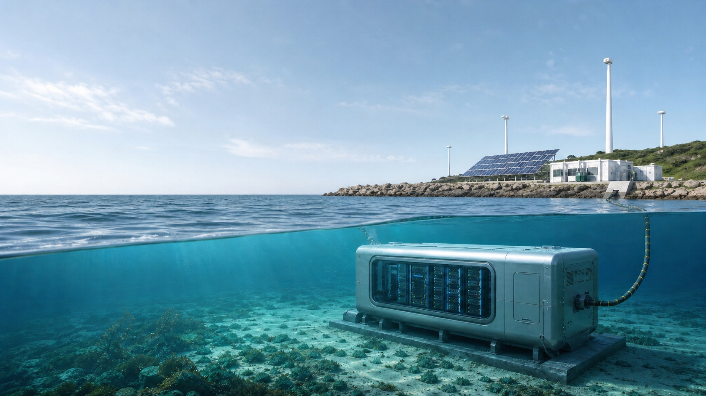
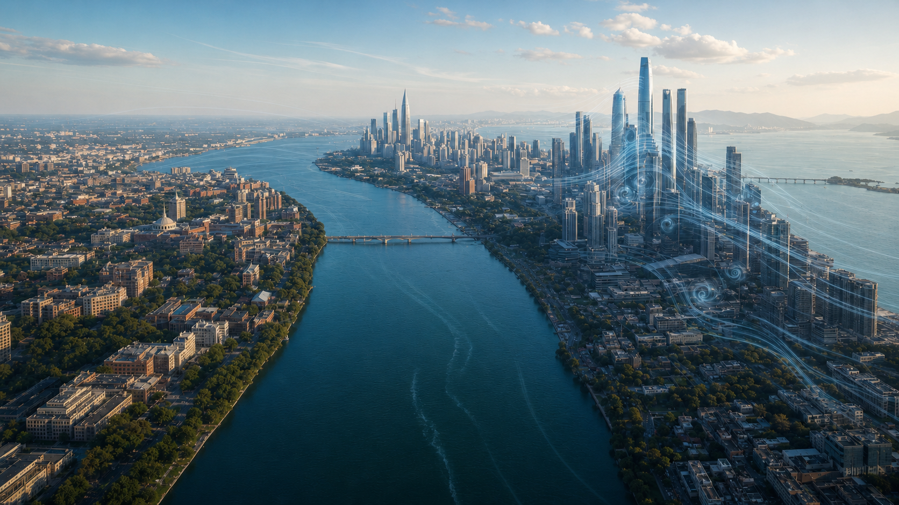

The Environmental Cost of Computing
A mathematical model of HPC energy demand, 2030 carbon emissions, and the transition toward cleaner computing.
Read more
My academic work uses modeling, writing, and evidence to make open-ended problems easier to reason about. These papers show how I frame assumptions, compare tradeoffs, and communicate conclusions.
HERE

A mathematical model of HPC energy demand, 2030 carbon emissions, and the transition toward cleaner computing.
Read more
A comparative model of how Boston and Shenzhen urban form changes drone paths, wind disturbance, and route correction.
Read moreA hybrid HDVP-BeVarMax model ranks 13 countries across 15 safety indicators and groups comparable performers for targeted policy.
Read more
A clean paper copy focused on model clarity, problem decomposition, and evidence-based communication.
Read more